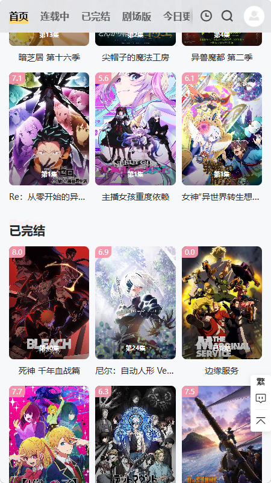

Animoe 快问快答：追番党都想知道的 7 件事
Animoe 是什么、怎么装、投屏失败怎么办、搜索有什么技巧——一篇问答速查把追番路上最常遇到的问题一次性说清。
整理一篇关于 Animoe 的快问快答，把追番时最容易碰到的问题一口气说透。
Animoe 到底是什么？谁该装？
Animoe 是一款专注动漫内容的聚合观看应用。简单说就是把多个动漫源的内容整合到一个 App 里，搜索、播放、换源、投屏这些事情一站式解决，不用在好几个网站之间来回跳。去它的官网看一眼功能介绍基本就明白是什么定位了。
适合的人群很明确——日常追番、偶尔补老番的用户。如果你只是偶尔看一两部新番，装不装差别不大；但如果你同时追三四部以上，或者想找一些冷门老番，Animoe 省下来的时间会很明显。
安装包从哪儿拿？怎么安装？
正规渠道就是 Animoe 的官方下载。拿到安装包后直接在手机上点开安装就行——Android 会提示"未知来源"，在系统设置里允许一下就好，这是 Android 的标准安全提示，不是安装包有问题。
iOS 端因为系统限制，一般需要通过 AltStore 或 TrollStore 之类的侧载方式安装，步骤稍微繁琐一点，但官方文档里有完整教程，跟着走不会出错。
搜索番剧有什么技巧？经常搜不到怎么办？
Animoe 的搜索支持三种方式，不同场景用不同的搜法效率差很多：
- 完整片名：如果你确定名字，直接搜最准，比如"进击的巨人 最终季"，精准命中的番会排在最前面。
- 关键词片段：记不全全名的时候输入几个核心字就行，比如"巨人""咒术"，比硬猜全名靠谱。
- 角色或制作组名：想找某个人参与的作品，搜名字反而更准，比如"新房昭之"就能拉出他参与的全部作品。
搜不到的时候别慌，先换个译名试试——很多番有大陆译法、台译、港译甚至原名三种写法，换个词可能就出来了。再不行就去分类页直接翻，有时候关键词在详情页没被索引到，但分类浏览能找到。

投屏到电视怎么操作？连不上怎么办？
投屏功能是 Animoe 的一大卖点，操作其实很简单：打开想看的番，进入全屏播放界面，右上角会有一个投屏图标（方框加 WiFi 信号的样子），点它选目标设备就行。连上之后手机就变成遥控器了，调进度、暂停、切集都在手机上操作。
但投屏也是最容易出问题的环节。常见的坑按排查顺序列一下：
找不到设备——90% 的情况是手机没连和电视同一个 WiFi。很多人习惯手机开着移动数据，WiFi 又连了另一个网络，这时候投屏肯定搜不到。先确认手机和电视在同一个局域网，再检查路由器有没有开"AP 隔离"，有些双频路由器或访客网络会把设备隔开。
连上了但没画面——先降清晰度试试，1080P 对带宽要求高，降到 720P 看能不能出画面。再换个视频源，某个源的协议可能不兼容投屏。还有一个容易忽略的细节：部分版本在手机熄屏时会断开投屏，投屏期间保持手机常亮。
画面卡顿或断连——让手机和电视离路由器近一些，暂时关掉电脑下载、IoT 设备这些抢带宽的东西。实在不行把清晰度降到 720P 以下，基本就能稳住。
反复连不上的话，先把电视和手机都重启一次，这招能解决大部分临时的网络抖动问题。实在搞不定可以去Animoe文档翻一下投屏失败的专门排查章节，列的更细。
弹幕能自定义吗？总觉得默认的太挡画面
能改的地方还不少，主要是三个维度：颜色、字号、位置。
颜色方面选和画面对比明显的就行——白色是默认，但在亮色场景下红色或黄色更醒目。字号根据个人喜好调，字小了看不清就调大，但别调太大，弹幕铺满半个画面追番就变看弹幕了。
最实用的是位置锁定。Animoe 允许把弹幕限制在顶部或底部某个区域，不会全屏飘。打开这个选项之后，画面中间追番的核心区域就清静了，弹幕存在感降低但还能看到。
发弹幕本身没什么门槛，但有基本的文明共识——别剧透、别人身攻击、别刷广告、别复制粘贴无意义内容。违规的弹幕会被管理员屏蔽，严重的可能被封号。
播放卡顿、源失效怎么办？需要手动换源吗？
Animoe 的核心优势之一就是多源切换。每个番剧页面一般会列出好几个可用的视频源，当前源卡了或者提示失效，直接点换源按钮选下一个就行，不用退出播放重新找。
换源的时候留意一下源的清晰度和加载速度，不同源的画质和稳定性差别挺大。一些冷门老番可能只有一两个源可用，碰到失效就只能等源维护或者找替代。
和同类追番应用比，Animoe 有什么优势？
主要两点：一是源多，同一个番能列出多个播放源，一个挂了换另一个就行；二是功能覆盖比较全，搜索、换源、投屏、弹幕这些追番最常用的功能都做了，不用装好几个 App 分别用。
对比下来，Animoe 不是那种功能最花哨的，但它把追番的核心体验做扎实了。搜索三种方式覆盖不同场景，投屏功能如果网络条件好的话体验很流畅，弹幕自定义虽然简单但够用。
唯一的短板是 iOS 安装稍微麻烦一点，但这是整个 iOS 生态的侧载限制，不是 Animoe 本身的问题。
关于 Animoe 的完整资料和整理好的软件包，在 GitHub、Gitee、GitCode 三个平台都能找到，国内访问哪个顺就用哪个。
最后一句：如果你同时追好几部番、不想在各个动漫站之间跳来跳去，Animoe 值得装。